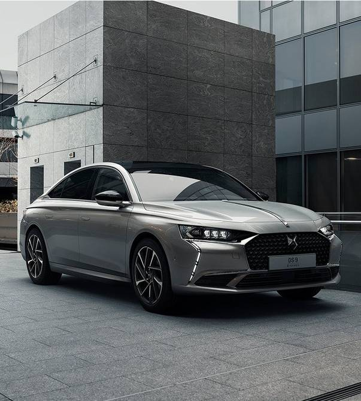

NAJVIŠE D)
Vi ste DS9 tip
Profinjenost je naprosto must have, kako u životnom, tako i u modnom stilu. Udobnost, ali i izuzetna sofisticiranost i klasika ono su što krasi ovaj tip, a upravo takav je DS 9 E-TENSE. Ova francuska premium limuzina dizajnirana je kako bi pružila tehničku izvrsnost te nevjerojatan doživljaj i iskustvo vožnje. Budući da je opremljen baterijom kapaciteta 11,9 kWh koja pomaže 1,6-litrenom PureTech motoru, neće vas razočarati ni kada su u pitanju kvalitetne performanse i niske vrijednosti emisije.